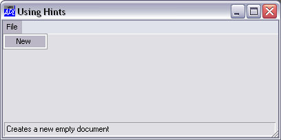
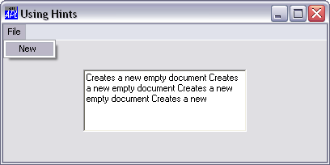

All of the GUI objects supported by Dyalog APL that have a visible presence on the screen have a Hint property and a HintObj property. Quite simply, when the user moves the mouse pointer over the object the contents of its Hint property are displayed in the object referenced by its HintObj property. When the user moves the mouse pointer away from the object, its Hint disappears. If an object has a Hint, but its HintObj property is empty, the system uses the HintObj defined for its parent, or for its parent’s parent, and so forth up the tree. If there is no HintObj defined, the Hint is simply not displayed. This mechanism has two useful attributes:
The object named by HintObj may be any object with either a Caption property or a Text property. Thus you can use the Caption on a Label, Form, or Button or the text in an Edit object. If you use a StatusField object which has both Caption and Text properties, the Text property is employed. If you set HintObj to the name of an object which possesses neither of these properties, the hints will simply not be displayed. The following example illustrates the use of a StatusField for displaying hints.
This example illustrates the use of a StatusField object to display hints. .
'Test'⎕WC 'Form' 'Using Hints'('HintObj' 'Test.SB.H')
'Test.MB' ⎕WC 'MenuBar'
'Test.MB.F' ⎕WC 'Menu' '&File'
HINT ← 'Creates a new empty document'
'Test.MB.F.New' ⎕WC 'MenuItem' '&New' ('Hint' HINT)
'Test.SB' ⎕WC 'StatusBar'
'Test.SB.H' ⎕WC 'StatusField' ('Size' ⍬ 98)
Using a StatusBar to display Hints
You can display a much larger amount of information using a multi-line Edit object as shown in this example.
'Test'⎕WC 'Form' 'Using Hints' ('HintObj' 'Test.ED')
'Test.MB' ⎕WC 'MenuBar'
'Test.MB.F' ⎕WC 'Menu' '&File'
HINT ← 100⍴'Creates a new empty document '
'Test.MB.F.New' ⎕WC 'MenuItem' '&New' ('Hint' HINT) 'Test.ED' ⎕WC 'Edit' ('Style' 'Multi')
Displaying Hints in an Edit object